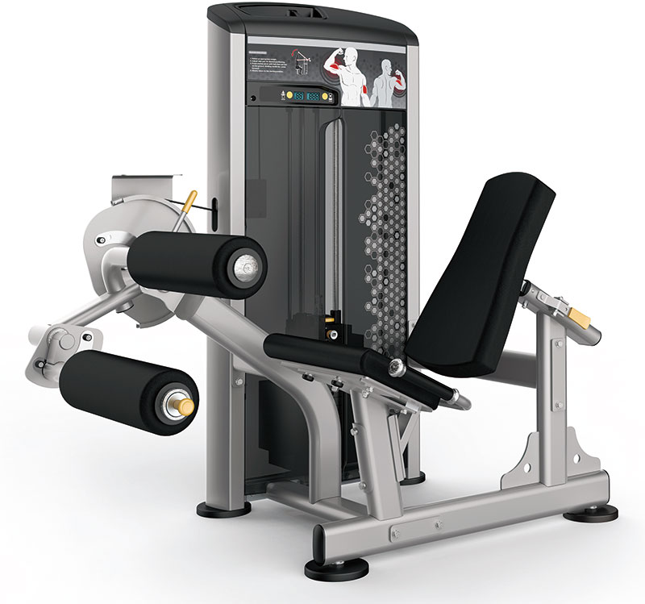
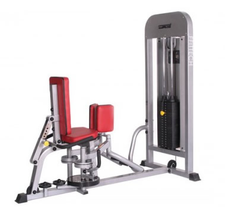
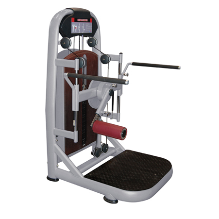

|  |  |  |
| Leg Extension | Abductor | Multi-Hip |
| Leg Extension เครื่องออกกำลังกาย สำหรับบริหารหน้าขา | |
คุณสมบัติในการบริหาร ใช้ในการบริหารให้กล้ามเนื้อหน้าขา กระชับแข็งแรงและมีกล้ามเนื้อ เมื่อรู้สึกแข็งแรงขึ้นหรือรู้สึกเบาแรง สามารถปรับน้ำหนักเครื่องออกกำลังกายเพิ่มขึ้นตามที่ต้องการ มีมือจับสองข้างเพื่อช่วยในการประคองตัว เพื่อใช้กำลังในการยกขาขึ้นเตะไปข้างหน้า คุณสมบัติของเครื่อง โครงสร้างเครื่องออกกำลังกายเป็นเหล็กหนา 2 มิลลิเมตร พ่นสีขาว และผ่านการอบอย่างดี แผ่นน้ำหนักทำจากเหล็กหล่อ แต่ละแผ่นหนัก 5 กิโลกรัม มีจำนวน 20 แผ่น น้ำหนักรวม100 กิโลกรัม เพลาแผ่นทำจากเหล็กสเตนเลส เบาะเป็นหนังเทียม สีดำ บุด้วยฟองน้ำชนิดแข็งอย่างดีที่มา..thaiexercise.com |
|
| Abductor เครื่องออกกำลังกาย สำหรับบริหารต้นแขนด้านใน | |
คุณสมบัติในการบริหาร
คุณสมบัติของเครื่อง
|
|
| Multi-Hip เครื่องออกกำลังกาย สำหรับบริหารรอบขา | |
คุณสมบัติในการบริหาร
คุณสมบัติของเครื่อง
|
|